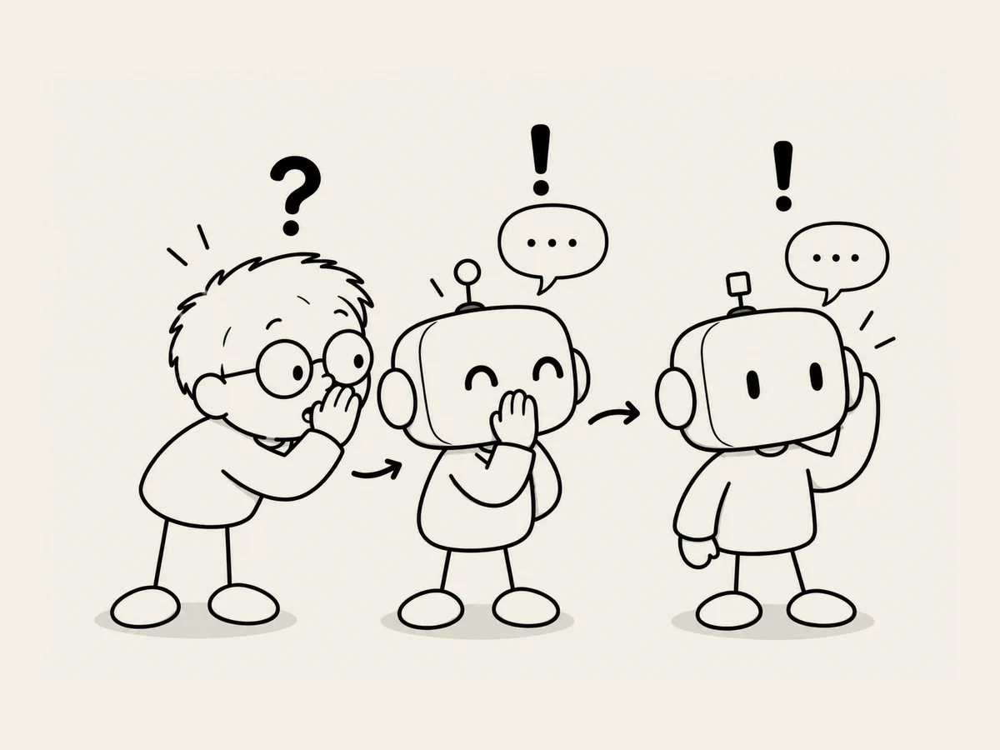

9.
AI Tells Me to Ask AI. Wow.
This was while I was building my second website.
I wanted to change the order of the characters on the screen.
It seemed simple to me.
The character information was organized in Excel.
“Can't I just change the order in Excel?”
ChatGPT answered.
“Yes, Captain. That's the best way.”
Of course.
But then it continued.
It said we first needed to check whether changing the order in Excel would actually change the character order on the website.
Hmm.
“Then check it.”
But ChatGPT told me to ask Codex.
It wrote an instruction for me.
Check whether anything else affects the order of the cards.
Check whether changing only the Excel order actually changes the order on the website.
Check whether it causes any other problems.
Hang on.
I asked AI,
and now it's telling me to ask AI.
Wow.
I never saw that coming.
